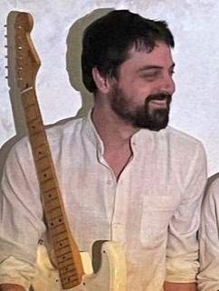
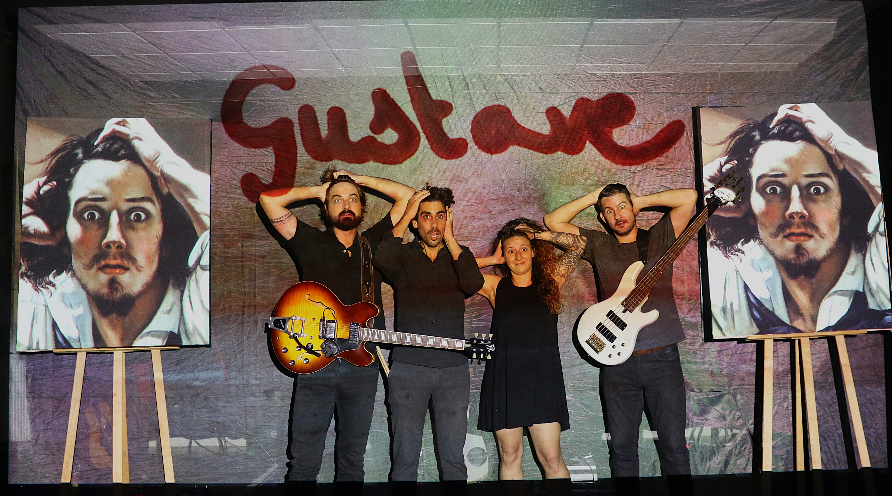
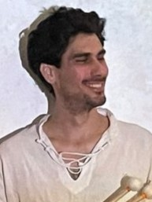
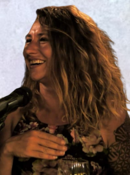
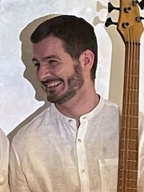
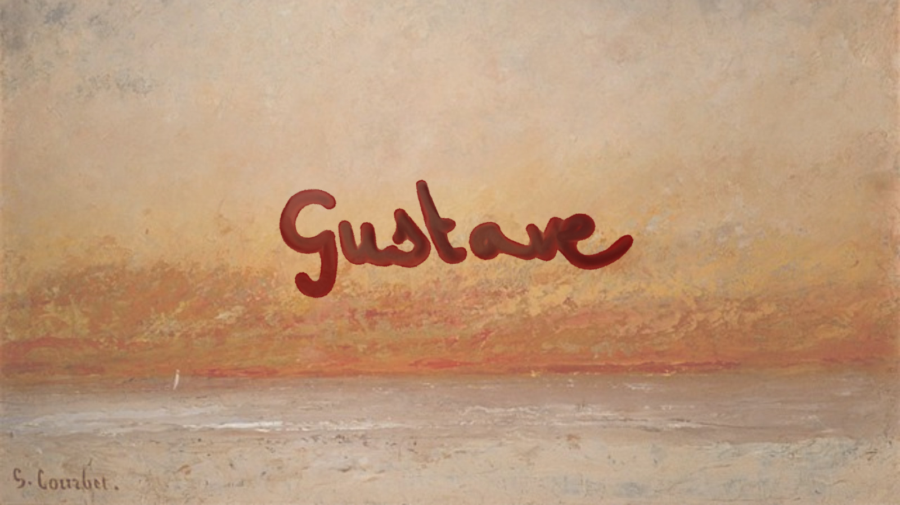

Hugo Coste Dombre
Guitare, synthé, sound design
Compositeur aux multiples facettes, il explore des paysages sonores envoûtants, du murmure aux vagues les plus impétueuses.
Un trio rock progressif, une scénographie immersive, et les tableaux de Courbet qui se mettent à bouger. Environ une heure, en salle comme en musée.
L'univers sonore de Gustave se construit à partir de la puissance émotionnelle des paysages, des scènes naturalistes et des humeurs changeantes capturées par Courbet dans ses toiles.
Le trio propose des compositions originales, aux influences rock progressif, qui évoluent au rythme des atmosphères contrastées, tantôt calmes et mélancoliques, tantôt fougueuses et emportées. Chaque morceau est une interprétation sonore des sensations ressenties face à une œuvre, invitant l'auditeur à se perdre dans des paysages intérieurs, à l'image des forêts mystérieuses ou des falaises imposantes peintes par l'artiste.
En collaboration avec Lisa Blondel, artiste plasticienne spécialisée dans l'art immersif, les images se transforment et évoluent au rythme de la musique. Le public est invité à une contemplation active, où chaque tableau sonore prend vie à travers des jeux de lumières et de projections mouvantes.
Comme une promenade à travers un musée imaginaire, l'auditeur est libre de faire sa propre lecture des sons et des visuels.
Trois extraits captés en concert. La lecture ne démarre qu'au clic.


Guitare, synthé, sound design
Compositeur aux multiples facettes, il explore des paysages sonores envoûtants, du murmure aux vagues les plus impétueuses.

Batterie
Doté d'une grande sensibilité rythmique, il sculpte les textures sonores du spectacle en alternant puissance et subtilité.

Plasticienne, scénographie
Elle intègre l'art numérique à la scénographie pour proposer une expérience visuelle immersive qui réagit à la musique du trio.

Basse
Sa maîtrise des ambiances graves et vibrantes ancre la musique dans une profondeur émotive captivante.
Salles, musées, médiathèques, festivals : écrivez-nous pour recevoir la fiche technique, les conditions financières et les disponibilités.
